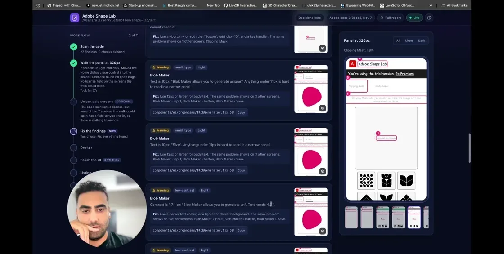

Review an existing add-on
Start with the project folder and, when available, the ZIP you intend to upload.
Adobe Express pre-submission review
Check your source, upload package, and panel before you submit. Review the findings and prepare your listing in one workflow.

Check the source and upload package against Adobe guidance and common review patterns.
Open reachable screens in light and dark at 320 px and capture what the browser measures.
Work through the findings and rerun the checks after updates.
Review draft copy and marketplace screenshots before saving them to the project.
Start with the project folder and, when available, the ZIP you intend to upload.
Turn feedback from a marketplace review into tracked items for the next submission.
Follow progress and open panel captures from the local dashboard.
Requires Node.js 18 or newer and Git.
git clone https://github.com/ThisIsMrAli/express-addon-review.git
cd express-addon-review
node install-agents.mjs --globalTry this prompt
Use express-addon-review to review the Adobe Express add-on in this folder before marketplace submission.
Open your project in Codex after running the installer. Ask for express-addon-review by name in a new chat.
Open your project in Claude Code after running the installer. Ask for express-addon-review by name in a new chat.
Open your project in Cursor after running the installer. Ask for express-addon-review by name in a new chat.
The installer also links the skill into supported locations for tools such as Gemini CLI and Windsurf. Keep the checkout on disk so the links continue to work.